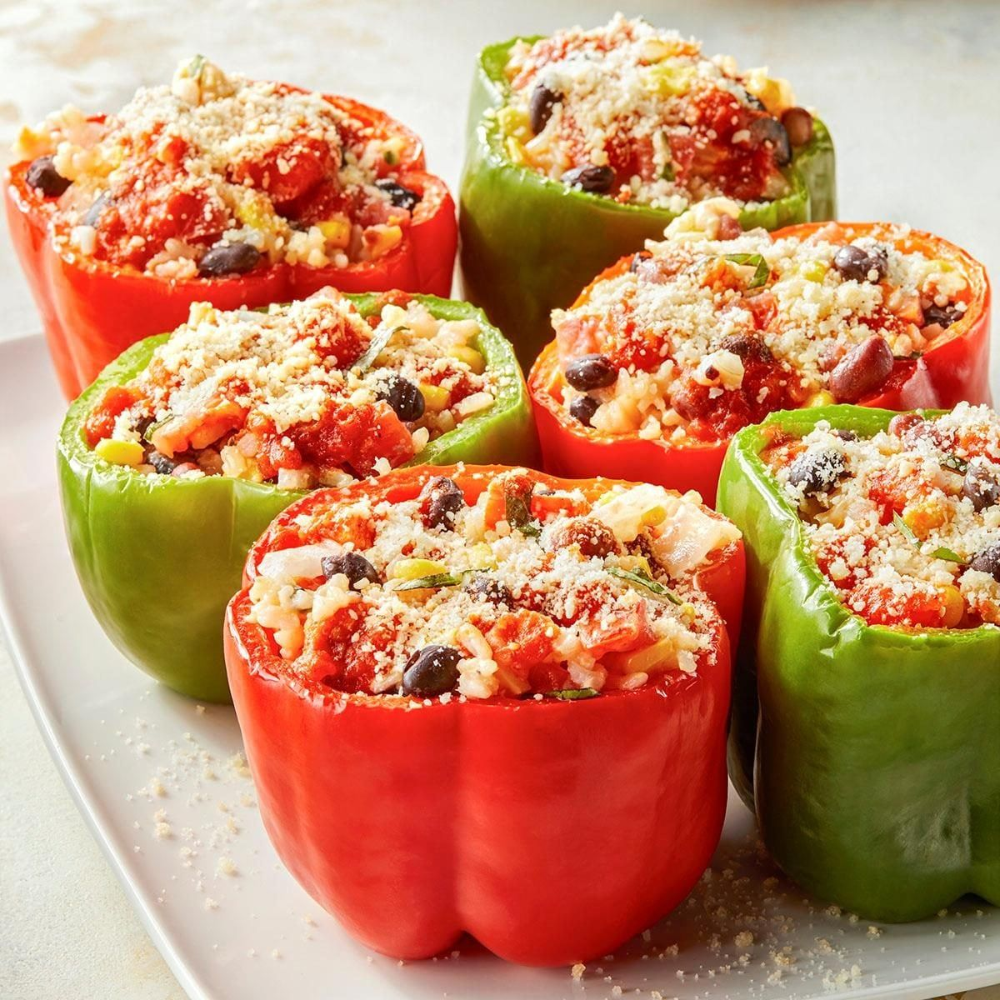

Stuffed Peppers with Beans & Rice

- Meal
- Dinner
- Serves
- 6
- Protein
- legume
- Cook
- oven · 20 min active / 55 min total · easy
- Make-ahead / leftovers
- yes / yes
- Mediterranean
- yes
- WW tier
- moderate
- Status
- Trying out (probation)
Taste of Home vegetarian stuffed peppers — brown rice, beans, corn, tomato sauce. Oven for a weeknight; slow cooker if you want it waiting. Beans scaled up so it's actually a protein dinner.
Ingredients
- 2 cups cooked brown rice (house rule: always brown)
- 3 small tomatoes, chopped (or 1 can diced tomatoes, drained)
- 1 cup frozen corn, thawed
- 1 small onion, chopped
- 3/4 cup cubed or shredded Monterey Jack
- 1 can (15 oz) black beans, rinsed and drained
- 1 can (15 oz) kidney or small red beans, rinsed and drained
- 3 garlic cloves, minced
- 1 tsp salt
- 1/2 tsp pepper
- 6 large bell peppers, tops cut off, seeds removed
- 3/4 cup jarred marinara or meatless spaghetti sauce
- 1/2 cup water
- 4 Tbsp grated Parmesan, divided
- Optional: 1/3 cup chopped olives; a few basil leaves, sliced
Method
- Preheat oven to 350°F. Mix rice, tomatoes, corn, onion, Monterey Jack, both beans, garlic, salt, pepper, and olives/basil if using.
- Stand the peppers in an ungreased 3-quart baking dish (trim a sliver off the bottoms if they won't sit). Fill with the rice mixture.
- Stir marinara with water. Pour half into the dish around the peppers; spoon the rest over the tops. Sprinkle with 2 Tbsp Parmesan.
- Cover and bake 30–35 minutes until the peppers are tender and the filling is hot. Sprinkle remaining Parmesan.
Slow-cooker option (source method): Pour half the sauce in a 5-qt oval slow cooker, add filled peppers, top with remaining sauce and 2 Tbsp Parmesan. Low 3.5–4 hours.
Notes
- Taste of Home called for 1/3 cup each bean — not enough protein for 6. Use 1 can each (same beans, just a real dinner). Cheese amounts unchanged.
- Assemble the night before, refrigerate, bake the next day. Or freeze stuffed and unbaked (thaw overnight, then bake).
- Kid-mild: no chili powder, no jalapeño. Olives optional.
- Mediterranean ✓: olive-oil-adjacent tomato sauce, legumes, vegetables, brown rice. moderate because of the Jack + Parmesan, not a cheese-bake like Spinach Ricotta Chicken Bake.